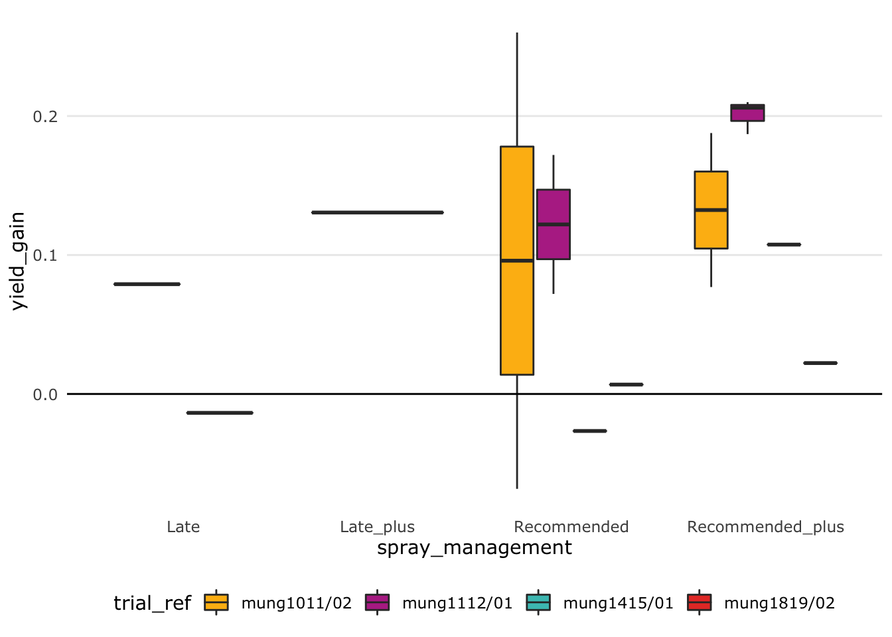

5 Prepare data for meta-analysis
5.1 Set environment and import data
5.2 Standardising sample variance
Meta-analyses use variance from the data to calculate the effect sizes. The type of variance needs to be the same across all the data incorporated in the meta-analysis.
We are narrowing the meta-analysis to only include treatments using demethylation inhibitors, tebuconazole and propiconazole. Let’s look at what type of statistical error was reported for the trials that used these fungicides.
PM_MB_means %>%
filter(fungicide_ai == "tebuconazole" |
fungicide_ai == "propiconazole") %>%
group_by(trial_ref, location, year , Y_error_type, fungicide_ai) %>%
summarise(DMI_treatments = length(Y_error_type)) %>%
arrange(Y_error_type) %>%
select(!fungicide_ai) %>%
kable(caption = "Number of treatments for each trial and the error type reported",
align = "c") %>%
footnote(general = "DMI - demethylation inhibitors (tebuconazole and propiconazole).")## `summarise()` regrouping output by 'trial_ref', 'location', 'year', 'Y_error_type' (override with `.groups` argument)| trial_ref | location | year | Y_error_type | DMI_treatments |
|---|---|---|---|---|
| mung1112/02 | Kingaroy | 2012 | lsd (P=0.05) | 4 |
| mung1112/02 | Kingaroy | 2012 | lsd (P=0.05) | 2 |
| AM1303 | Premer | 2013 | stdev | 3 |
| AM1304 | Marys Mount | 2013 | stdev | 3 |
| AM1305 | Goolhi | 2013 | stdev | 3 |
| BB1305 | Millmerran | 2013 | stdev | 3 |
| mung1011/01 | Hermitage | 2011 | stdev | 2 |
| mung1011/02 | Kingaroy | 2011 | stdev | 6 |
| mung1415/01 | Hermitage | 2015 | stdev | 5 |
| mung1516/01 | Hermitage | 2016 | stdev | 6 |
| mung1516/02 | Kingaroy | 2016 | stdev | 6 |
| mung1617/01 | Hermitage | 2017 | stdev | 15 |
| mung1617/01 | Hermitage | 2017 | stdev | 15 |
| mung1617/02 | Missen Flats | 2017 | stdev | 15 |
| mung1617/02 | Missen Flats | 2017 | stdev | 15 |
| mung1718/01 | Wellcamp | 2018 | stdev | 6 |
| mung1718/01 | Wellcamp | 2018 | stdev | 6 |
| mung1819/01 | Hermitage | 2019 | stdev | 3 |
| mung1819/02 | Hermitage | 2019 | stdev | 3 |
| mung1112/01 | Gatton | 2012 | NA | 4 |
| mung1112/01 | Gatton | 2012 | NA | 2 |
| mung1516/03 | Emerald | 2016 | NA | 6 |
| Note: | ||||
| DMI - demethylation inhibitors (tebuconazole and propiconazole). |
The experiment summaries report either standard deviation, least square differences or no error term (NA).
First we will convert LSD and standard deviation to sample variance.
Then we will impute variances for the trials, which did not report any form of variance (NA).
5.2.1 Converting least-squares to sample variance
First let’s get a list the of trials that reported LSD.
Trials <- PM_MB_means %>%
filter(Y_error_type == "lsd (P=0.05)") %>%
select(trial_ref) %>%
distinct()
Trials## trial_ref
## 1 mung0001/01
## 2 mung1112/02Let’s use this list of trials to subset the data and calculate sampling variances.
We will follow the method of converting ‘least square differences’ (LSD) to sampling variance reported by Nugugi et.al (2011). A table of T-critical values was consulted to select the T-crit value in the equation. Our data contained 30 degrees of freedom which equates to a ‘T-crit’ value of 1.697.

Calculating sampling variance from mean squared error Paul et al. (2008)
Tcrit is the T critical value for which there is significant difference between two groups.
This value is the same for both trials “mung1112/01” and “mung1112/02”.
Tcrit <- 2.042 # 0.05 and DFw = 30
for (i in Trials$trial_ref) {
DFw <-
sum(PM_MB_means[PM_MB_means$trial_ref == i, ]$replicates) -
length(PM_MB_means[PM_MB_means$trial_ref == i, ]$replicates) # degrees of freedom within groups
LSD <-
PM_MB_means[PM_MB_means$trial_ref == i, ]$yield_error[1]
V_yield <-
(PM_MB_means[PM_MB_means$trial_ref == i, ]$replicates[1] *
(LSD / Tcrit) ^ 2) / 2
# method - Nugugi et.al (2011) DOI: 10.1094/phyto-08-10-0221
for (j in seq_along(PM_MB_means[PM_MB_means$trial_ref == i,]$replicates)) {
if (j == 1) {
Sv <-
vector(length = length(PM_MB_means[PM_MB_means$trial_ref == i,]$replicates))
} # reset Sv vector if this is the first loop
Sv[j] = V_yield /
PM_MB_means[PM_MB_means$trial_ref == i,]$replicates[j]
}
# Replace the values in the dataset
PM_MB_means[PM_MB_means$trial_ref == i,]$yield_error <-
Sv
PM_MB_means[PM_MB_means$trial_ref == i,]$Y_error_type <-
"SamplingVariance"
}5.2.2 Converting standard deviation to sample variance
Now to estimate the variance from the standard deviation.
# subset data by those which describe the Yield error with standard deviation
Trials <- PM_MB_means %>%
filter(Y_error_type == "stdev") %>%
select(trial_ref) %>%
distinct()
# calculate the Sampling variance from the standard deviation
# standard error of the mean equals the standard deviation divided by the square
# root of the number of samples
# Sv <- sem^2 <- stdev/sqrt(n)
# Sampling variance equals the square of the standard error.
# Sv <- (stdev/sqrt(n))^2
# Therefore
for (j in seq_along(PM_MB_means[PM_MB_means$trial_ref %in% Trials$trial_ref,]$yield_error)) {
if (j == 1) {
Sv <-
vector(length = length(PM_MB_means[PM_MB_means$trial_ref %in% Trials$trial_ref,]$yield_error))
}# create empty vector at first iteration with length of j
Sv[j] = (PM_MB_means[PM_MB_means$trial_ref %in% Trials$trial_ref,]$yield_error[j]) ^ 2
}
# and replacing the values in the dataset
PM_MB_means[PM_MB_means$trial_ref %in% Trials$trial_ref,]$yield_error <-
Sv
PM_MB_means[PM_MB_means$trial_ref %in% Trials$trial_ref,]$Y_error_type <-
"SamplingVariance"5.2.3 Check variance of data-set
Our data currently uses sample variance to define the yield error. We should expect that when yield increases so does the variance. Let’s quickly plot this to check.
# redefine sample variance calculated from mean square
PM_MB_means$vi <-
PM_MB_means$Y_Msquare /
(PM_MB_means$n)
PM_MB_means %>%
ggplot(aes(x = grain_yield.t.ha., y = vi)) +
geom_point()## Warning: Removed 104 rows containing missing values (geom_point).
We see here that the sample variance generally decreases or has no association with the grain yield. This might be due to the unpredictable nature of mungbeans, however going forward we will use mean squares, which defines between trial variation and is the more generic error term.
## Warning: Removed 104 rows containing missing values (geom_point).
5.3 Reduce data set to required variables
Let’s tidy up the data set into a data frame of only the variables, which are required for the analysis.
First remove the irrelevant columns/variables.
Then calculate fungicide application timing variables relative to the first sign of disease.
Entries with NA in the grain yield or powdery mildew severity are also removed from the data.
source("R/slimming_PM_dat.R") # see R script for the code, which reduces the data.
slim_PM_dat %<>%
mutate(fungicide_timing_1 = fungicide_application_1 - first_sign_disease) %>%
mutate(fungicide_timing_2 = fungicide_application_2 - fungicide_application_1) %>%
mutate(fungicide_timing_3 = fungicide_application_3 - fungicide_application_2) %>%
filter(!is.na(grain_yield.t.ha)) %>%
filter(!is.na(PM_final_severity))5.3.1 Cluster fungicide applications
We are going to define ‘fungicide application timing’ as a categorical variable, relative to the first sign of powdery mildew.
These categorical variables are named:
Early: First fungicide application was prior to first sign of disease.
Recommended: First fungicide application was applied on the day powdery mildew was observed, or within three days of first sign.
Late: First fungicide application was four or more days after first sign of disease being observed. Follow up fungicide applications (cluster_2 and cluster_3) were also categorised as either early, recommended or late.
slim_PM_dat %<>%
mutate(
cluster_1 = case_when(
fungicide_timing_1 < 0 ~ "Early",
fungicide_timing_1 >= 0 &
fungicide_timing_1 < 4 ~ "Recommended",
TRUE ~ "Late"
)
) %>%
mutate(
cluster_2 = case_when(
is.na(fungicide_timing_2) ~ NA_character_,
fungicide_timing_2 < 13 ~ "Early",
fungicide_timing_2 >= 13 &
fungicide_timing_2 < 17 ~ "Recommended",
TRUE ~ "Late"
)
) %>%
mutate(
cluster_3 = case_when(
fungicide_timing_3 < 14 ~ "Early",
is.na(fungicide_timing_3) ~ NA_character_,
TRUE ~ "Recommended"
)
)Let’s look at these clusters to see where we have the most degrees of freedom.
clusters <-
unique(slim_PM_dat[c("cluster_1", "cluster_2", "cluster_3")])
for (i in 1:nrow(clusters)) {
if (i == 1) {
clusters$n <- NA
clusters$n_x_trial <- NA
}
clusters[i, "n"] <-
nrow(slim_PM_dat[same(slim_PM_dat$cluster_1, clusters[i, "cluster_1"]) &
same(slim_PM_dat$cluster_2, clusters[i, "cluster_2"]) &
same(slim_PM_dat$cluster_3, clusters[i, "cluster_3"]),])
clusters[i, "n_x_trial"] <-
length(unique(slim_PM_dat[same(slim_PM_dat$cluster_1, clusters[i, "cluster_1"]) &
same(slim_PM_dat$cluster_2, clusters[i, "cluster_2"]) &
same(slim_PM_dat$cluster_3, clusters[i, "cluster_3"]),
"trial_ref"]))
}
knitr::kable(clusters)| cluster_1 | cluster_2 | cluster_3 | n | n_x_trial | |
|---|---|---|---|---|---|
| 1 | Late | NA | NA | 57 | 17 |
| 2 | Recommended | NA | NA | 32 | 15 |
| 9 | Recommended | Late | NA | 12 | 4 |
| 11 | Early | Late | Early | 2 | 1 |
| 15 | Recommended | Recommended | NA | 30 | 10 |
| 30 | Recommended | Late | Early | 1 | 1 |
| 33 | Recommended | Early | NA | 1 | 1 |
| 34 | Recommended | Early | Early | 1 | 1 |
| 36 | Early | NA | NA | 13 | 3 |
| 37 | Early | Late | NA | 1 | 1 |
| 38 | Early | Late | Recommended | 1 | 1 |
| 42 | Recommended | Recommended | Recommended | 1 | 1 |
| 44 | Early | Recommended | Recommended | 1 | 1 |
| 48 | Late | Recommended | NA | 6 | 4 |
| 59 | Late | Recommended | Recommended | 2 | 2 |
| 148 | Late | Late | NA | 12 | 1 |
From this we can see that there are 16 different cluster combinations, which would make the analysis too difficult. We will reduce this to 6 levels within one variable.
Single sprays of either:
early,
recommended timing,
late.
Two or more sprays where the first spray was either:
early,
recommended timing,
late.
slim_PM_dat <- slim_PM_dat %>%
mutate(
spray_management = case_when(
fungicide_timing_1 < 0 &
is.na(fungicide_application_2) &
is.na(fungicide_application_3) ~ "Early",
fungicide_timing_1 >= 0 &
fungicide_timing_1 < 4 &
is.na(fungicide_application_2) &
is.na(fungicide_application_3) ~ "Recommended",
fungicide_timing_1 >= 4 &
is.na(fungicide_application_2) &
is.na(fungicide_application_3) ~ "Late",
fungicide_timing_1 < 0 &
!is.na(fungicide_application_2) ~ "Early_plus",
fungicide_timing_1 >= 0 &
fungicide_timing_1 < 4 &
!is.na(fungicide_application_2) ~ "Recommended_plus",
fungicide_timing_1 >= 4 &
!is.na(fungicide_application_2) ~ "Late_plus",
TRUE ~ "Other"
)
)
slim_PM_dat[slim_PM_dat$fungicide_ai == "control",
c(
"fungicide_timing_1",
"fungicide_timing_2",
"fungicide_timing_3",
"spray_management"
)] <- "control"Now to view the number break-down of the spray_management treatments
##
## control Early Early_plus Late
## 40 13 5 17
## Late_plus Recommended Recommended_plus
## 20 32 46There are few ‘Early_plus’ treatments, these treatments therefore will have too few comparisons with other treatments in the meta-analysis to provide accurate results. Therefore we will remove ‘Early_plus’ from the analysis.
5.4 Test dose effect
Earlier we noted there were different doses of propiconazole, which might influence our analysis.
Let’s check this by comparing a linear mixed effect model including and excluding dose.
We already have a factor breaking down the dose in the trial variable.
Let’s make a new one without dose.
slimmer_PM_dat$trial_noDose <- paste(slimmer_PM_dat$trial_ref, slimmer_PM_dat$year,
slimmer_PM_dat$location,slimmer_PM_dat$host_genotype,
slimmer_PM_dat$row_spacing,sep = "_")
cbind(Dose = head(slimmer_PM_dat$trial),
NoDose = head(slimmer_PM_dat$trial_noDose)) %>%
kable()| Dose | NoDose |
|---|---|
| mung1011/01_2011_Hermitage_Berken_0.75_lowDose | mung1011/01_2011_Hermitage_Berken_0.75 |
| mung1011/01_2011_Hermitage_Berken_0.75_lowDose | mung1011/01_2011_Hermitage_Berken_0.75 |
| mung1011/01_2011_Hermitage_Crystal_0.75_lowDose | mung1011/01_2011_Hermitage_Crystal_0.75 |
| mung1011/01_2011_Hermitage_Crystal_0.75_lowDose | mung1011/01_2011_Hermitage_Crystal_0.75 |
| mung1011/02_2011_Kingaroy_Berken_0.75_lowDose | mung1011/02_2011_Kingaroy_Berken_0.75 |
| mung1011/02_2011_Kingaroy_Crystal_0.75_lowDose | mung1011/02_2011_Kingaroy_Crystal_0.75 |
Let’s test the dose effect in a basic linear mixed effect model.
m1 <-
lmer(log(grain_yield.t.ha * 1000) ~ factor(spray_management) +
(1 | trial),
data = slimmer_PM_dat)
m2 <-
lmer(log(grain_yield.t.ha * 1000) ~ factor(spray_management) +
(1 | trial_noDose),
data = slimmer_PM_dat)
anova(m1, m2)## refitting model(s) with ML (instead of REML)## Data: slimmer_PM_dat
## Models:
## m1: log(grain_yield.t.ha * 1000) ~ factor(spray_management) + (1 |
## m1: trial)
## m2: log(grain_yield.t.ha * 1000) ~ factor(spray_management) + (1 |
## m2: trial_noDose)
## npar AIC BIC logLik deviance Chisq Df Pr(>Chisq)
## m1 8 -21.404 3.588 18.702 -37.404
## m2 8 -60.156 -35.165 38.078 -76.156 38.753 0 < 2.2e-16 ***
## ---
## Signif. codes: 0 '***' 0.001 '**' 0.01 '*' 0.05 '.' 0.1 ' ' 1Using the model without dose produces a lower AIC, however we should accept the data with dose as there is a significant difference between the models and we should accept the more complicated model m1.
We will retain dose as a variable inside the trial factor.
5.5 Disease pressure factor
We may wish to investigate the impact of spray management in mitigating the yield loss through the effect on the disease pressure.
We will set a categorical variable to indicate the amount of disease pressure in the trial, which will be evaluated on the control plot.
We will create two categories, lowD and highD.
We will use the median AUDPC to separate the trials into these two groups.
slimmer_PM_dat$D_pres <- NA_character_
Trial_Dpress <- slimmer_PM_dat %>%
group_by(trial_ref) %>%
filter(fungicide_ai == "control") %>%
summarise(AUDPC_C = mean(AUDPC_m, na.rm = TRUE))## `summarise()` ungrouping output (override with `.groups` argument)## [1] 153.625write.csv(median_AUDPC, here("cache/median_AUDPC_C.csv"), row.names = FALSE)
sort(Trial_Dpress$AUDPC_C)## [1] 24.50000 40.25000 41.00000 47.12500 77.00000 78.33333 82.60000
## [8] 119.62500 153.62500 161.00000 169.00000 172.00000 192.08333 196.00000
## [15] 198.72222 228.37037 239.61111for (i in unique(slimmer_PM_dat$trial_ref)) {
if (is.na(Trial_Dpress[Trial_Dpress$trial_ref == i, "AUDPC_C"])) {
next()
}
if (Trial_Dpress[Trial_Dpress$trial_ref == i, "AUDPC_C"] < median_AUDPC)
{
slimmer_PM_dat[slimmer_PM_dat$trial_ref == i, "D_pres"] <- "lowD"
} else{
if (Trial_Dpress[Trial_Dpress$trial_ref == i, "AUDPC_C"] >= median_AUDPC) {
slimmer_PM_dat[slimmer_PM_dat$trial_ref == i, "D_pres"] <- "highD"
} else{
slimmer_PM_dat[slimmer_PM_dat$trial_ref == i, "D_pres"] <-
NA_character_
}
}
}Let’s have a quick look to examine whether trials with high disease pressure sustain a greater yield loss.
slimmer_PM_dat %>%
ggplot(aes(x = D_pres, y = grain_yield.t.ha))+
geom_boxplot() +
xlab("Disease pressure") +
ylab("Grain yield (t/ha)")
From this plot we see that in the trials with high disease pressure tended to produce lower yields.
There are 0 trials that contained no data for AUDPC and thus produced NA values.
5.6 Row spacing
We may want to consider row spacing in the trials.
However one of the locations has NA as the row spacing.
For now let’s assign the most used row spacing of 0.33 m as an approximation so the model can analyse this as a continuous variable.
If we decide to use the row_spacing column as a factor in the final model we will need to remove this approximation.
## trial trial_ref year host_genotype location
## 27 AM1303_2013_Premer_Crystal_NA_lowDose AM1303 2013 Crystal Premer
## 28 AM1303_2013_Premer_Crystal_NA_lowDose AM1303 2013 Crystal Premer
## 29 AM1303_2013_Premer_Crystal_NA_lowDose AM1303 2013 Crystal Premer
## 30 AM1303_2013_Premer_Crystal_NA_lowDose AM1303 2013 Crystal Premer
## row_spacing n planting_date first_sign_disease fungicide_ai
## 27 NA 3 2012-12-28 2013-02-28 control
## 28 NA 3 2012-12-28 2013-02-28 propiconazole
## 29 NA 3 2012-12-28 2013-02-28 propiconazole
## 30 NA 3 2012-12-28 2013-02-28 propiconazole
## fungicide_application_1 fungicide_application_2 fungicide_application_3
## 27 <NA> <NA> <NA>
## 28 2013-02-28 <NA> <NA>
## 29 2013-02-28 2013-03-19 <NA>
## 30 2013-02-28 2013-03-19 2013-03-31
## total_fungicide dose_ai.ha grain_yield.t.ha yield_error yield_gain
## 27 0 0.0 1.421569 0.005072835 NA
## 28 1 62.5 1.450163 0.054783283 0.02859477
## 29 2 62.5 1.344635 0.052398439 -0.07693355
## 30 3 62.5 1.333742 0.021939178 -0.08782680
## prop_yield_gain PM_final_severity PM_final_severity_error Y_Msquare
## 27 NA 8.000000 0.0000000 0.009814712
## 28 0.02011494 7.833333 0.2886751 0.009814712
## 29 -0.05411877 2.166667 0.2886751 0.009814712
## 30 -0.06178161 2.000000 0.8660254 0.009814712
## Inc_Ms AUDPC_m AUDPC_sd AUDPS_m AUDPS_sd dose fungicide_timing_1
## 27 417.1806 24.500000 0.000000 49.000000 0.000000 lowDose control days
## 28 417.1806 23.916667 1.010363 47.833333 2.020726 lowDose 0 days
## 29 417.1806 4.083333 1.010363 8.166667 2.020726 lowDose 0 days
## 30 417.1806 3.500000 3.031089 7.000000 6.062178 lowDose 0 days
## fungicide_timing_2 fungicide_timing_3 cluster_1 cluster_2 cluster_3
## 27 control days control days Late <NA> <NA>
## 28 NA days NA days Recommended <NA> <NA>
## 29 19 days NA days Recommended Late <NA>
## 30 19 days 12 days Recommended Late Early
## spray_management D_pres
## 27 control lowD
## 28 Recommended lowD
## 29 Recommended_plus lowD
## 30 Recommended_plus lowDslimmer_PM_dat[is.na(slimmer_PM_dat$row_spacing),"row_spacing"] <- 0.33
write.csv(slimmer_PM_dat, file = here("cache/slimmer_PM_clusterdat.csv"), row.names = FALSE)5.6.1 Mungbeans age and yield saved
The time at which powdery mildew infects in the seasons and the age of the plant might affect the AUDPC and the loss in yield.
Let’s have a look at the age of each trial when each powdery mildew infected it.
We will use the difference between planting_date and first_sign_disease as a proxy for crop maturity.
dat1 <- slimmer_PM_dat %>%
mutate(days2PM = first_sign_disease - planting_date) %>%
arrange(desc(days2PM)) %>%
select(
trial_ref,
year,
location,
spray_management,
days2PM,
grain_yield.t.ha,
yield_gain,
prop_yield_gain,
AUDPC_m,
D_pres,
PM_final_severity
)
dat1## trial_ref year location spray_management days2PM grain_yield.t.ha
## 1 AM1304 2013 Marys Mount control 82 days 1.0937500
## 2 AM1304 2013 Marys Mount Early 82 days 1.2654321
## 3 mung1819/01 2019 Hermitage Recommended 67 days 0.5431636
## 4 mung1819/01 2019 Hermitage Recommended_plus 67 days 0.5635524
## 5 mung1819/01 2019 Hermitage Late 67 days 0.5712637
## 6 mung1819/01 2019 Hermitage control 67 days 0.5871653
## 7 mung1011/01 2011 Hermitage control 63 days 1.6618554
## 8 mung1011/01 2011 Hermitage Recommended 63 days 1.7693124
## 9 mung1011/01 2011 Hermitage control 63 days 1.3875920
## 10 mung1011/01 2011 Hermitage Recommended 63 days 1.5438955
## 11 AM1303 2013 Premer control 62 days 1.4215686
## 12 AM1303 2013 Premer Recommended 62 days 1.4501634
## 13 AM1303 2013 Premer Recommended_plus 62 days 1.3446351
## 14 AM1303 2013 Premer Recommended_plus 62 days 1.3337418
## 15 AM1305 2013 Goolhi control 61 days 0.6944444
## 16 AM1305 2013 Goolhi Recommended 61 days 0.6527778
## 17 AM1305 2013 Goolhi Recommended_plus 61 days 0.7222222
## 18 AM1305 2013 Goolhi Recommended_plus 61 days 0.6041667
## 19 BB1305 2013 Millmerran control 60 days 0.8020833
## 20 BB1305 2013 Millmerran Recommended 60 days 0.8026961
## 21 BB1305 2013 Millmerran Recommended_plus 60 days 0.7714461
## 22 BB1305 2013 Millmerran Recommended_plus 60 days 0.7438725
## 23 mung1415/01 2015 Hermitage control 56 days 2.0449480
## 24 mung1415/01 2015 Hermitage Recommended 56 days 2.0183208
## 25 mung1415/01 2015 Hermitage Recommended_plus 56 days 2.1524434
## 26 mung1415/01 2015 Hermitage Late 56 days 2.1239542
## 27 mung1415/01 2015 Hermitage Late_plus 56 days 2.1755223
## 28 mung1819/02 2019 Hermitage Recommended 53 days 0.2962093
## 29 mung1819/02 2019 Hermitage Recommended_plus 53 days 0.3116830
## 30 mung1819/02 2019 Hermitage Late 53 days 0.2758593
## 31 mung1819/02 2019 Hermitage control 53 days 0.2894430
## 32 mung1011/02 2011 Kingaroy control 48 days 0.7984600
## 33 mung1011/02 2011 Kingaroy control 48 days 0.7984600
## 34 mung1011/02 2011 Kingaroy Recommended 48 days 1.0585700
## 35 mung1011/02 2011 Kingaroy Recommended 48 days 0.7301950
## 36 mung1011/02 2011 Kingaroy Recommended_plus 48 days 0.9862350
## 37 mung1011/02 2011 Kingaroy Recommended_plus 48 days 0.8754200
## 38 mung1112/01 2012 Gatton control 42 days 0.7380000
## 39 mung1112/01 2012 Gatton Recommended 42 days 0.8100000
## 40 mung1112/01 2012 Gatton Recommended_plus 42 days 0.9480000
## 41 mung1112/01 2012 Gatton Recommended 42 days 0.9100000
## 42 mung1112/01 2012 Gatton Recommended_plus 42 days 0.9250000
## 43 mung1112/01 2012 Gatton Recommended 42 days 0.8600000
## 44 mung1112/01 2012 Gatton Recommended_plus 42 days 0.9440000
## 45 mung1617/02 2017 Missen Flats control 39 days 1.6418592
## 46 mung1617/02 2017 Missen Flats control 39 days 2.0839414
## 47 mung1617/02 2017 Missen Flats control 39 days 1.8248956
## 48 mung1617/02 2017 Missen Flats control 39 days 1.5045726
## 49 mung1617/02 2017 Missen Flats control 39 days 1.4828200
## 50 mung1617/02 2017 Missen Flats control 39 days 1.6085402
## 51 mung1617/02 2017 Missen Flats control 39 days 1.4483718
## 52 mung1617/02 2017 Missen Flats control 39 days 1.2265200
## 53 mung1617/02 2017 Missen Flats control 39 days 1.2278887
## 54 mung1617/02 2017 Missen Flats Early 39 days 1.7914059
## 55 mung1617/02 2017 Missen Flats Early 39 days 1.7242822
## 56 mung1617/02 2017 Missen Flats Early 39 days 1.7330037
## 57 mung1617/02 2017 Missen Flats Early 39 days 1.7172796
## 58 mung1617/02 2017 Missen Flats Early 39 days 1.1301771
## 59 mung1617/02 2017 Missen Flats Early 39 days 1.4435203
## 60 mung1617/02 2017 Missen Flats Recommended 39 days 2.1005560
## 61 mung1617/02 2017 Missen Flats Recommended 39 days 1.9218522
## 62 mung1617/02 2017 Missen Flats Recommended 39 days 1.8592191
## 63 mung1617/02 2017 Missen Flats Recommended 39 days 1.8609926
## 64 mung1617/02 2017 Missen Flats Recommended 39 days 1.4980957
## 65 mung1617/02 2017 Missen Flats Recommended 39 days 1.3890579
## 66 mung1617/02 2017 Missen Flats Recommended_plus 39 days 2.1016994
## 67 mung1617/02 2017 Missen Flats Recommended_plus 39 days 2.5262528
## 68 mung1617/02 2017 Missen Flats Recommended_plus 39 days 2.1794811
## 69 mung1617/02 2017 Missen Flats Recommended_plus 39 days 2.0006008
## 70 mung1617/02 2017 Missen Flats Recommended_plus 39 days 1.9737390
## 71 mung1617/02 2017 Missen Flats Recommended_plus 39 days 1.7988394
## 72 mung1617/02 2017 Missen Flats Late 39 days 2.1433538
## 73 mung1617/02 2017 Missen Flats Late 39 days 1.8777801
## 74 mung1617/02 2017 Missen Flats Late 39 days 1.8278987
## 75 mung1617/02 2017 Missen Flats Late 39 days 1.7806148
## 76 mung1617/02 2017 Missen Flats Late 39 days 1.7563900
## 77 mung1617/02 2017 Missen Flats Late 39 days 1.5336704
## 78 mung1617/02 2017 Missen Flats Recommended_plus 39 days 2.3121444
## 79 mung1617/02 2017 Missen Flats Recommended_plus 39 days 2.2779137
## 80 mung1617/02 2017 Missen Flats Recommended_plus 39 days 2.1125934
## 81 mung1617/02 2017 Missen Flats Recommended_plus 39 days 1.3569026
## 82 mung1617/02 2017 Missen Flats Recommended_plus 39 days 1.7921655
## 83 mung1617/02 2017 Missen Flats Recommended_plus 39 days 1.7424354
## 84 mung1617/01 2017 Hermitage control 39 days 0.4047025
## 85 mung1617/01 2017 Hermitage control 39 days 0.5588572
## 86 mung1617/01 2017 Hermitage control 39 days 0.3163168
## 87 mung1617/01 2017 Hermitage control 39 days 0.3190589
## 88 mung1617/01 2017 Hermitage control 39 days 0.6205462
## 89 mung1617/01 2017 Hermitage control 39 days 0.4736264
## 90 mung1617/01 2017 Hermitage control 39 days 0.6151813
## 91 mung1617/01 2017 Hermitage control 39 days 0.5020225
## 92 mung1617/01 2017 Hermitage control 39 days 0.4721220
## 93 mung1617/01 2017 Hermitage Early 39 days 0.3594340
## 94 mung1617/01 2017 Hermitage Early 39 days 0.5927613
## 95 mung1617/01 2017 Hermitage Early 39 days 0.6019744
## 96 mung1617/01 2017 Hermitage Early 39 days 0.5592597
## 97 mung1617/01 2017 Hermitage Early 39 days 0.5031042
## 98 mung1617/01 2017 Hermitage Early 39 days 0.4823959
## 99 mung1617/01 2017 Hermitage Recommended_plus 39 days 0.5059947
## 100 mung1617/01 2017 Hermitage Recommended_plus 39 days 0.3797529
## 101 mung1617/01 2017 Hermitage Recommended_plus 39 days 0.4386495
## 102 mung1617/01 2017 Hermitage Recommended_plus 39 days 0.4443692
## 103 mung1617/01 2017 Hermitage Recommended_plus 39 days 0.5183023
## 104 mung1617/01 2017 Hermitage Recommended_plus 39 days 0.4407214
## 105 mung1617/01 2017 Hermitage Recommended 39 days 0.6466969
## 106 mung1617/01 2017 Hermitage Recommended 39 days 0.6123413
## 107 mung1617/01 2017 Hermitage Recommended 39 days 0.5530278
## 108 mung1617/01 2017 Hermitage Recommended 39 days 0.4574364
## 109 mung1617/01 2017 Hermitage Recommended 39 days 0.4664223
## 110 mung1617/01 2017 Hermitage Recommended 39 days 0.5208322
## 111 mung1617/01 2017 Hermitage Recommended_plus 39 days 0.6590398
## 112 mung1617/01 2017 Hermitage Recommended_plus 39 days 0.5448189
## 113 mung1617/01 2017 Hermitage Recommended_plus 39 days 0.4198568
## 114 mung1617/01 2017 Hermitage Recommended_plus 39 days 0.3415256
## 115 mung1617/01 2017 Hermitage Recommended_plus 39 days 0.5638309
## 116 mung1617/01 2017 Hermitage Recommended_plus 39 days 0.6566246
## 117 mung1617/01 2017 Hermitage Late 39 days 0.3899615
## 118 mung1617/01 2017 Hermitage Late 39 days 0.4781363
## 119 mung1617/01 2017 Hermitage Late 39 days 0.3265938
## 120 mung1617/01 2017 Hermitage Late 39 days 0.5340506
## 121 mung1617/01 2017 Hermitage Late 39 days 0.5007825
## 122 mung1617/01 2017 Hermitage Late 39 days 0.6831480
## 123 mung1112/02 2012 Kingaroy control 38 days 0.7510000
## 124 mung1112/02 2012 Kingaroy Recommended 38 days 1.0900000
## 125 mung1112/02 2012 Kingaroy Recommended_plus 38 days 1.0980000
## 126 mung1112/02 2012 Kingaroy Recommended 38 days 1.0360000
## 127 mung1112/02 2012 Kingaroy Recommended_plus 38 days 1.2010000
## 128 mung1112/02 2012 Kingaroy Recommended 38 days 1.0570000
## 129 mung1112/02 2012 Kingaroy Recommended_plus 38 days 1.3230000
## 130 mung1718/01 2018 Wellcamp Late_plus 36 days 1.5559470
## 131 mung1718/01 2018 Wellcamp Late_plus 36 days 1.5820209
## 132 mung1718/01 2018 Wellcamp control 36 days 0.9007130
## 133 mung1718/01 2018 Wellcamp Late_plus 36 days 1.4725237
## 134 mung1718/01 2018 Wellcamp Late_plus 36 days 1.5675378
## 135 mung1718/01 2018 Wellcamp control 36 days 1.0890772
## 136 mung1718/01 2018 Wellcamp Late_plus 36 days 1.0845229
## 137 mung1718/01 2018 Wellcamp Late_plus 36 days 1.1542511
## 138 mung1718/01 2018 Wellcamp control 36 days 1.0927657
## 139 mung1718/01 2018 Wellcamp Late_plus 36 days 1.5753976
## 140 mung1718/01 2018 Wellcamp Late_plus 36 days 1.6521132
## 141 mung1718/01 2018 Wellcamp control 36 days 1.5731203
## 142 mung1718/01 2018 Wellcamp Late_plus 36 days 1.2169503
## 143 mung1718/01 2018 Wellcamp Late_plus 36 days 1.6902978
## 144 mung1718/01 2018 Wellcamp control 36 days 1.4512971
## 145 mung1718/01 2018 Wellcamp Late_plus 36 days 1.2343578
## 146 mung1718/01 2018 Wellcamp Late_plus 36 days 1.1730934
## 147 mung1718/01 2018 Wellcamp control 36 days 1.0561352
## 148 mung1516/03 2016 Emerald control 34 days 0.8050000
## 149 mung1516/03 2016 Emerald Recommended 34 days 0.8700000
## 150 mung1516/03 2016 Emerald Recommended_plus 34 days 0.8330000
## 151 mung1516/03 2016 Emerald Recommended_plus 34 days 0.8480000
## 152 mung1516/03 2016 Emerald Recommended 34 days 0.9260000
## 153 mung1516/03 2016 Emerald Recommended_plus 34 days 0.8050000
## 154 mung1516/03 2016 Emerald Late_plus 34 days 0.7840000
## 155 mung1516/01 2016 Hermitage control 34 days 1.8029015
## 156 mung1516/01 2016 Hermitage Late 34 days 2.2159243
## 157 mung1516/01 2016 Hermitage Late_plus 34 days 2.3700542
## 158 mung1516/01 2016 Hermitage Late_plus 34 days 2.2929950
## 159 mung1516/01 2016 Hermitage Recommended 34 days 2.1414271
## 160 mung1516/01 2016 Hermitage Recommended_plus 34 days 2.3381466
## 161 mung1516/01 2016 Hermitage Late_plus 34 days 2.3345514
## 162 mung1516/02 2016 Kingaroy control 27 days 0.8107400
## 163 mung1516/02 2016 Kingaroy Late 27 days 1.0308510
## 164 mung1516/02 2016 Kingaroy Late_plus 27 days 1.0339186
## 165 mung1516/02 2016 Kingaroy Late_plus 27 days 0.8728011
## 166 mung1516/02 2016 Kingaroy Recommended 27 days 0.8989727
## 167 mung1516/02 2016 Kingaroy Recommended_plus 27 days 0.9438287
## 168 mung1516/02 2016 Kingaroy Late_plus 27 days 0.9443491
## yield_gain prop_yield_gain AUDPC_m D_pres PM_final_severity
## 1 NA NA 47.125000 lowD 3.000000
## 2 0.1716820990 0.1569664905 30.583333 lowD 3.166667
## 3 -0.0440017140 -0.0749392275 28.000000 lowD 5.000000
## 4 -0.0236128720 -0.0402150331 28.000000 lowD 5.000000
## 5 -0.0159016090 -0.0270819972 42.666667 lowD 7.166667
## 6 NA NA 41.000000 lowD 7.500000
## 7 NA NA 38.500000 lowD 4.666667
## 8 0.2445887000 0.1604150968 10.500000 lowD 2.000000
## 9 NA NA 42.000000 lowD 5.000000
## 10 0.0191717670 0.0125739286 14.000000 lowD 2.333333
## 11 NA NA 24.500000 lowD 8.000000
## 12 0.0285947720 0.0201149431 23.916667 lowD 7.833333
## 13 -0.0769335510 -0.0541187738 4.083333 lowD 2.166667
## 14 -0.0878267970 -0.0617816089 3.500000 lowD 2.000000
## 15 NA NA 161.000000 highD 7.000000
## 16 -0.0416666660 -0.0599999991 37.375000 highD 3.750000
## 17 0.0277777780 0.0400000003 14.875000 highD 2.750000
## 18 -0.0902777770 -0.1299999990 0.000000 highD 1.000000
## 19 NA NA 153.625000 highD 8.000000
## 20 0.0006127450 0.0007639418 66.500000 highD 8.000000
## 21 -0.0306372550 -0.0381970972 49.062500 highD 5.625000
## 22 -0.0582107840 -0.0725744840 11.062500 highD 1.625000
## 23 NA NA 82.600000 lowD 7.800000
## 24 -0.0266271530 -0.0130209440 61.800000 lowD 6.600000
## 25 0.1074953900 0.0525663203 55.400000 lowD 5.400000
## 26 0.0790062230 0.0386348329 79.400000 lowD 6.600000
## 27 0.1305743270 0.0638521512 73.700000 lowD 6.400000
## 28 0.0067662760 0.0233768873 49.800000 lowD 5.600000
## 29 0.0222400150 0.0768372920 47.800000 lowD 4.600000
## 30 -0.0135836950 -0.0469304692 83.000000 lowD 7.333333
## 31 NA NA 78.333333 lowD 7.833333
## 32 NA NA 211.000000 highD 8.000000
## 33 NA NA 173.166667 highD 7.666667
## 34 0.2601100000 0.3257645968 96.333333 highD 5.333333
## 35 -0.0682650000 -0.0854958295 50.333333 highD 4.333333
## 36 0.1877750000 0.2351714551 55.333333 highD 3.333333
## 37 0.0769600000 0.0963855422 45.500000 highD 4.000000
## 38 NA NA 169.000000 highD 7.500000
## 39 0.0720000000 0.0975609756 85.800000 highD 4.300000
## 40 0.2100000000 0.2845528455 59.800000 highD 3.300000
## 41 0.1720000000 0.2330623306 137.800000 highD 6.300000
## 42 0.1870000000 0.2533875339 59.800000 highD 3.300000
## 43 0.1220000000 0.1653116531 111.800000 highD 5.300000
## 44 0.2060000000 0.2791327913 26.000000 highD 2.000000
## 45 NA NA 233.666667 highD 9.000000
## 46 NA NA 239.500000 highD 9.000000
## 47 NA NA 241.833333 highD 9.000000
## 48 NA NA 242.333333 highD 9.000000
## 49 NA NA 239.500000 highD 9.000000
## 50 NA NA 241.833333 highD 9.000000
## 51 NA NA 237.333333 highD 9.000000
## 52 NA NA 241.000000 highD 8.666667
## 53 NA NA 239.500000 highD 9.000000
## 54 -0.0588261649 -0.0317939385 212.166667 highD 8.666667
## 55 -0.1259498474 -0.0680724591 223.833333 highD 9.000000
## 56 0.2010260812 0.1312199881 230.666667 highD 8.666667
## 57 0.1853020119 0.1209560851 224.166667 highD 9.000000
## 58 -0.1707497248 -0.1312523659 229.000000 highD 9.000000
## 59 0.1425934446 0.1096091194 223.666667 highD 9.000000
## 60 0.2503238869 0.1352932369 159.833333 highD 8.000000
## 61 0.0716201617 0.0387087450 197.166667 highD 8.666667
## 62 0.3272414993 0.2136072363 168.666667 highD 8.333333
## 63 0.3290150428 0.2147649188 198.500000 highD 8.333333
## 64 0.1971688642 0.1515603023 175.166667 highD 8.666667
## 65 0.0881311035 0.0677448579 186.833333 highD 8.000000
## 66 0.2514673536 0.1359112495 174.166667 highD 8.000000
## 67 0.6760207650 0.3653707949 158.333333 highD 8.000000
## 68 0.6475034999 0.4226585975 149.666667 highD 7.666667
## 69 0.4686231976 0.3058942901 191.500000 highD 8.000000
## 70 0.6728121901 0.5171791160 153.166667 highD 8.000000
## 71 0.4979125820 0.3827368065 188.000000 highD 8.000000
## 72 0.2931217556 0.1584243183 199.333333 highD 8.000000
## 73 0.0275480386 0.0148889639 207.333333 highD 8.000000
## 74 0.2959210668 0.1931627907 207.333333 highD 8.000000
## 75 0.2486372093 0.1622982026 218.500000 highD 8.000000
## 76 0.4554631307 0.3501066461 192.833333 highD 8.000000
## 77 0.2327435490 0.1789059484 218.500000 highD 8.000000
## 78 0.4619122854 0.2496509983 201.666667 highD 8.000000
## 79 0.4276816109 0.2311502519 214.333333 highD 7.666667
## 80 0.5806158182 0.3789975922 204.333333 highD 8.000000
## 81 -0.1750750015 -0.1142803933 215.666667 highD 8.000000
## 82 0.4912386297 0.3776066546 202.833333 highD 8.000000
## 83 0.4415085212 0.3393799786 207.500000 highD 8.000000
## 84 NA NA 246.500000 highD 8.000000
## 85 NA NA 222.666667 highD 8.000000
## 86 NA NA 212.000000 highD 8.000000
## 87 NA NA 235.500000 highD 8.000000
## 88 NA NA 226.833333 highD 8.000000
## 89 NA NA 212.333333 highD 8.000000
## 90 NA NA 235.166667 highD 8.000000
## 91 NA NA 222.833333 highD 8.000000
## 92 NA NA 241.500000 highD 8.000000
## 93 -0.0868802075 -0.1946615147 140.000000 highD 8.000000
## 94 0.0322860472 0.0576047636 123.833333 highD 7.666667
## 95 0.1812860289 0.4309270976 125.500000 highD 8.000000
## 96 0.1129454808 0.2530626827 124.666667 highD 8.000000
## 97 -0.0573711423 -0.1023615890 159.166667 highD 8.000000
## 98 0.0617075551 0.1466823329 137.666667 highD 7.666667
## 99 0.0596804442 0.1337184384 98.000000 highD 7.000000
## 100 -0.1807224396 -0.3224449672 77.166667 highD 7.000000
## 101 0.0179610801 0.0426944986 106.333333 highD 7.000000
## 102 -0.0019450842 -0.0043581047 117.666667 highD 7.000000
## 103 -0.0421730335 -0.0752451242 114.333333 highD 7.000000
## 104 0.0200329836 0.0476195300 125.166667 highD 7.000000
## 105 0.2003826173 0.4489720379 140.833333 highD 8.000000
## 106 0.0518659813 0.0925392811 155.666667 highD 8.000000
## 107 0.1323393856 0.3145781705 152.000000 highD 7.666667
## 108 0.0111221133 0.0249199155 188.833333 highD 8.000000
## 109 -0.0940530019 -0.1678093609 177.166667 highD 8.000000
## 110 0.1001438080 0.2380474700 144.666667 highD 8.000000
## 111 0.2127255362 0.4766272583 120.666667 highD 7.000000
## 112 -0.0156564452 -0.0279342286 99.500000 highD 5.333333
## 113 -0.0008315597 -0.0019766642 113.000000 highD 7.000000
## 114 -0.1047886946 -0.2347868014 173.000000 highD 7.000000
## 115 0.0033555968 0.0059870557 140.500000 highD 7.000000
## 116 0.2359361845 0.5608335944 151.833333 highD 7.000000
## 117 -0.0563527614 -0.1262625194 144.833333 highD 7.000000
## 118 -0.0823390156 -0.1469092672 155.333333 highD 7.000000
## 119 -0.0940945505 -0.2236680443 177.666667 highD 7.000000
## 120 0.0877363707 0.1965798117 175.333333 highD 7.333333
## 121 -0.0596927848 -0.1065038634 182.666667 highD 7.666667
## 122 0.2624596253 0.6238813065 206.166667 highD 8.000000
## 123 NA NA 196.000000 highD 8.000000
## 124 0.3390000000 0.4513981358 196.000000 highD 8.000000
## 125 0.3470000000 0.4620505992 92.400000 highD 4.300000
## 126 0.2850000000 0.3794940080 187.600000 highD 7.700000
## 127 0.4500000000 0.5992010652 103.600000 highD 4.700000
## 128 0.3060000000 0.4074567244 176.400000 highD 7.300000
## 129 0.5720000000 0.7616511318 19.600000 highD 1.700000
## 130 0.3190303615 0.2579238997 172.500000 highD 7.666667
## 131 0.3451042525 0.2790036478 156.333333 highD 6.333333
## 132 NA NA 178.833333 highD 8.333333
## 133 0.2023365310 0.1592966311 166.166667 highD 7.000000
## 134 0.2973506480 0.2340998743 147.666667 highD 6.000000
## 135 NA NA 200.166667 highD 8.000000
## 136 0.0100724330 0.0093744973 175.666667 highD 7.333333
## 137 0.0798005920 0.0742710755 158.000000 highD 6.000000
## 138 NA NA 193.666667 highD 7.333333
## 139 0.3384809785 0.2736489830 171.500000 highD 7.000000
## 140 0.4151965995 0.3356706415 155.333333 highD 6.000000
## 141 NA NA 194.333333 highD 9.000000
## 142 -0.0532368650 -0.0419126156 189.500000 highD 7.333333
## 143 0.4201107120 0.3307471013 161.500000 highD 7.000000
## 144 NA NA 220.333333 highD 8.666667
## 145 0.1599073210 0.1488270753 170.333333 highD 6.666667
## 146 0.0986429350 0.0918078011 150.666667 highD 5.666667
## 147 NA NA 205.000000 highD 8.000000
## 148 NA NA 77.000000 lowD 4.500000
## 149 0.0650000000 0.0807453416 55.000000 lowD 3.500000
## 150 0.0280000000 0.0347826087 33.000000 lowD 2.500000
## 151 0.0430000000 0.0534161491 39.600000 lowD 2.800000
## 152 0.1210000000 0.1503105590 50.600000 lowD 3.300000
## 153 0.0000000000 0.0000000000 39.600000 lowD 2.800000
## 154 -0.0210000000 -0.0260869565 77.000000 lowD 4.500000
## 155 NA NA 119.625000 lowD 8.000000
## 156 0.4130227690 0.2290878176 71.750000 lowD 6.250000
## 157 0.5671527330 0.3145777705 61.750000 lowD 4.500000
## 158 0.4900935170 0.2718359922 50.500000 lowD 3.000000
## 159 0.3385256070 0.1877671119 61.125000 lowD 4.000000
## 160 0.5352450660 0.2968798169 64.375000 lowD 7.500000
## 161 0.5316499120 0.2948857235 53.750000 lowD 6.500000
## 162 NA NA 172.000000 highD 8.250000
## 163 0.2201109620 0.2714938943 113.500000 highD 7.000000
## 164 0.2231785500 0.2752775832 47.000000 highD 2.250000
## 165 0.0620611410 0.0765487584 54.000000 highD 2.500000
## 166 0.0882326550 0.1088297779 140.000000 highD 7.750000
## 167 0.1330886820 0.1641570426 87.500000 highD 6.500000
## 168 0.1336091340 0.1647989894 63.500000 highD 2.750000From these trials I am most interested in the experiments that directly compare Recommended with Recommended_P_plus and/or Late with Late_plus.
Therefore I will not inspect, AM1304 (Marys Mount).
We can see that the crops which were likely the most mature, did not show large yield gains, in particular:
- Hermitage 2019
- Premer
- Goolhi
- Millmerran
- Premer
Let’s look at this in a quick box plot. We will only look at trials where powdery mildew set in at flowering which is approximately 60 days after planting.
dat1 %>%
filter(days2PM >= 60) %>%
filter(spray_management != "control" &
trial_ref != "AM1304") %>%
group_by(trial_ref, spray_management) %>%
ggplot(aes(x = spray_management, y = yield_gain, fill = trial_ref)) +
geom_boxplot() +
scale_fill_usq() +
geom_hline(yintercept = 0)
We can see in these experiments five experiments there is clearly no benefit to applying a second fungicide application.
For completeness let’s test this with powdery mildew infection commencing 40 - 60 days after planting, instead of greater than 60.
dat1 %>%
filter(days2PM < 60 &
days2PM >= 40) %>%
filter(spray_management != "control") %>%
group_by(trial_ref, spray_management) %>%
ggplot(aes(x = spray_management, y = yield_gain, fill = trial_ref)) +
geom_boxplot() +
scale_fill_usq() +
geom_hline(yintercept = 0)
We can see here all four experiments benefited, on average, from more than one spray.
Let’s estimate the age of the crop based on crop maturity observations, we will use the PM_MB_means which include some observations of crop maturity.
dat2 <- PM_MB_means %>%
mutate(
flower = lubridate::ymd(flowering_date) - lubridate::ymd(planting_date),
pod = lubridate::ymd(pod_fill_date) - lubridate::ymd(planting_date),
late_pod = lubridate::ymd(mid_late_pod_fill) - lubridate::ymd(planting_date)
) %>%
select(location, year, flower, pod, late_pod) %>%
distinct() %>%
arrange(desc(flower))
index1 <-
apply(dat2, 1 , function(X)
! all(is.na(X[c("flower", "pod", "late_pod")])))
dat2[index1,]## location year flower pod late_pod
## 1 Goolhi 2013 71 days 85 days NA days
## 2 Premer 2013 62 days NA days NA days
## 3 Hermitage 2011 57 days NA days NA days
## 4 Gatton 2012 42 days NA days NA days
## 5 Kingaroy 2012 38 days NA days NA days
## 14 Millmerran 2013 NA days 68 days 75 days
## 15 Marys Mount 2013 NA days 66 days NA days
## 19 Hermitage 2016 NA days NA days 72 days
## 20 Kingaroy 2016 NA days 54 days NA days## [1] 54## [1] 68.25## [1] 73.5We can see that flowering and podding can be variable, and depend on the cumulative degree days. However, on average flowering starts 54 days after sowing, podding starts 68.25, and late podding 73.5.